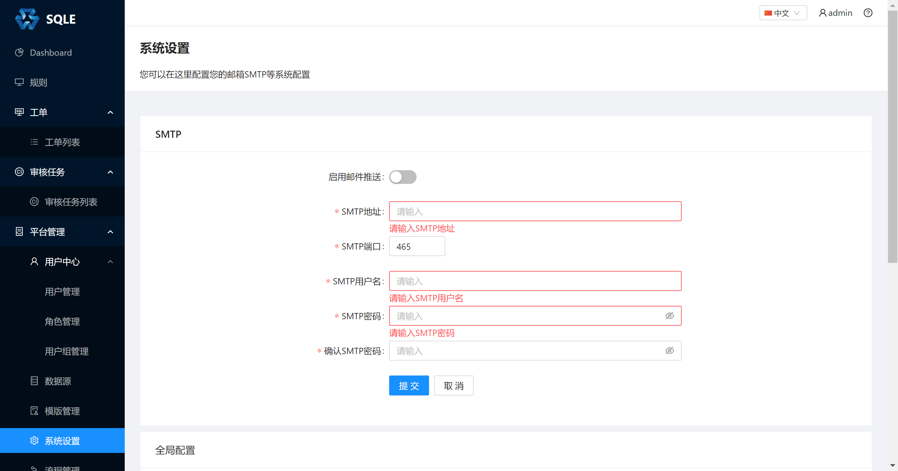
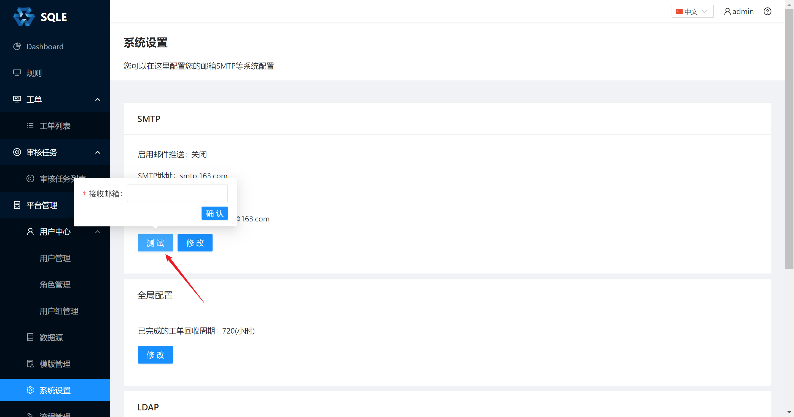

邮箱配置
SQLE 支持在工单流转过程中，通过邮件通知工单下一步操作人。在系统配置中配置发件邮箱服务器的信息，如下： 
邮箱配置项：
- 是否启用邮件通知: 启用后才会发送邮件通知, 邮件通知启停不会影响其他通知方式
- SMTP 地址：SMTP 服务器地址，如 smtp.163.com
- SMTP 端口：SMTP 服务器端口，如 25
- SMTP 用户名：完整的邮箱用户名
- SMTP 密码：该用户名的授权码（非邮箱用户密码）
邮箱测试方式:
- 配置好相关参数
- 点击测试按钮, 输入邮箱地址点击测试 
- 查看测试邮箱是否收到测试邮件